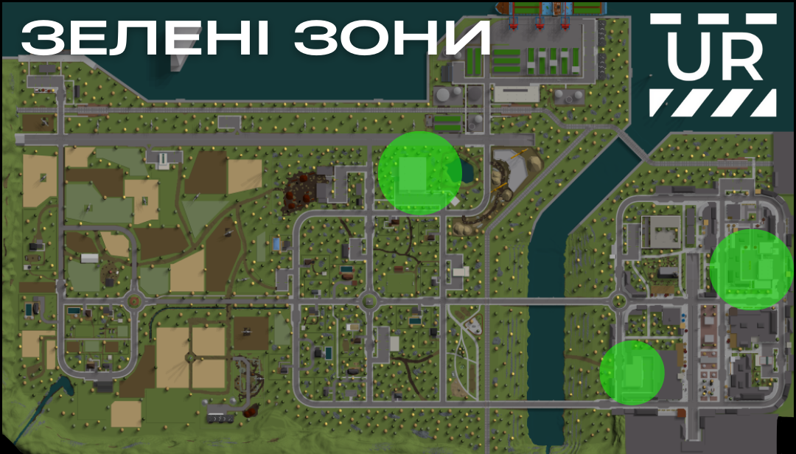

Пункт 48. Зелені зони.
Зелені зони (Green zone)
Зелена зона — це безпечна територія, де гравці можуть почуватися в безпеці та взаємодіяти без страху від агресивних дій чи насильства.
- До зелених зон на сервері входить:
- • Лікарня
- • Поліцейська дільниця
- • Пожежна частина
Будь-які прояви агресії, конфліктні дії та використання зброї суворо заборонені. На території Зелених зон забороняється проявляти агресію, провокувати конфлікти, витягувати або використовувати зброю.
Покарання – тимчасовий депорт на 5 діб. Якщо гравець використовував зброю та мав ліцензію – конфіскація.